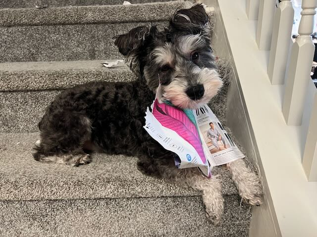

Are Miniature Schnauzers Easy to Train?
Generally, yes. Miniature Schnauzers are intelligent and eager to please, and they respond well to food rewards and praise. Their terrier independence means they can be a little stubborn, so short, upbeat, positive-reinforcement sessions work far better than repetition or harsh corrections.
Housebreaking Step by Step
- Take your puppy out on a consistent schedule — after meals, naps, and play.
- Pick one potty spot and return to it each time.
- Reward immediately with a treat and calm praise the moment they finish.
- Supervise indoors, and use a crate or pen when you cannot watch.
- Clean accidents with an enzyme cleaner so lingering odors do not invite repeats.
Managing Barking
Schnauzers are alert barkers by nature. Rather than punishing the bark, teach a “quiet” cue, reward calm behavior, and reduce triggers — for example, blocking window views of the street. Consistency from everyone in the household is what makes it stick.
Mental Enrichment
- Food puzzles and snuffle mats
- Short daily training games and new tricks
- Scent work — hiding treats for them to find
- Dog sports like agility, rally, or earthdog

Keep that clever brain busy
A bored schnauzer invents its own fun. Pair training with good grooming habits early. See grooming basics →
Socialization
Early, positive exposure shapes a confident adult dog. Between roughly 8 and 16 weeks, introduce your puppy to: